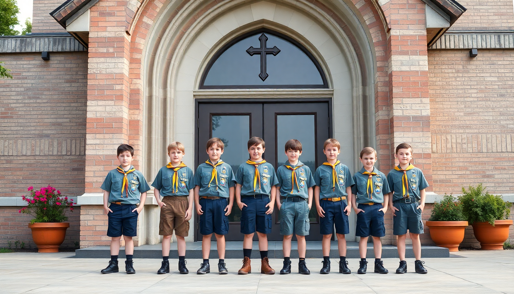

Le nostre Associazioni
Scopri i gruppi che animano la vita della parrocchia.

Gruppo Giovani
Un luogo di incontro, crescita e condivisione per i ragazzi della parrocchia.

Gruppo Scout
Attività di aiuto e solidarietà verso chi è in difficoltà.
Gruppo Gesù Risorto
Animazione musicale delle celebrazioni liturgiche.